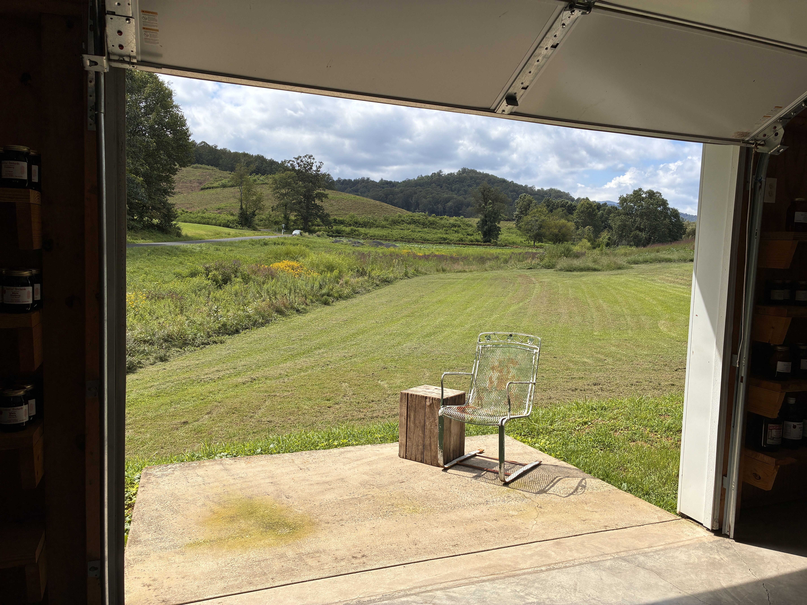

| Jack Mason About Research Blog National Parks |
|
January 19, 2026
While not exactly a new year’s resolution, I wanted to be a bit more intentional about the things I do and also reflective on the mundane and important moments in my life. These desires led me to pick up journaling and at the minimum, keep track of an important moment that occurred on that day. Looking through my journal this past month, I keep going back to the day when the group of kids said hi to me when I was outside running. It was probably around 10 AM ish, and I was running down past the train tracks near rock creek trail. It’s not performative or anything but I genuinely like running or walking around outside without having headphones in and doing some form of: people-watching, looking around, or just overhearing things that really aren’t my business. While that is kinda strange, I like the feeling of not being stuck in my own world but rather putting an ear to the door of someone else's. But back to the point of this story. I was running along the street and there was this group of kids with their reflective green vests on and two teachers (or something) guiding them through this garden - probably some like, pre-school trip-thing. But as I was nearing them this little boy screamed out “HI!” and started waving his hand at me. Then right after, all the other little kids looked towards me and subsequently yelled “HI,” with wide smiles, waving their hands. What started off as a tiresome morning was immediately lifted, and I couldn’t help but smile and wave back. Upon my reply, the children were elated, exclaiming “Look he said hi,” all laughing together. Even once I circled back on my route home, the kids still stopped and said hi to me. While I am extrapolating a lot from this moment, it puts forth a great case for not having an airpod in or whatever. In reflection, I believe that if I was running with headphones, I would have completely ignored the kids and continued my dreary morning, with the only reconciliation being that I checked off another day of the run-the-date challenge. But by being present in the moment, not only was my day lifted, but I’m sure I had a positive, if however brief, impact on these children. Imagine if that little boy screamed out hi just for me to look at him and say nothing, while I was shuffling through songs to find the one that will get me “in the zone”. Maybe next time he saw someone walking by him he would hesitate to interact. In a world where people are much less social and inviting, I feel like our early interactions with strangers are very formative in how outgoing we are as we grow up. Even now, walking past someone on the sidewalk, I get that brief question of “should I say good morning”, “will they respond back”, “should I just stare down and not do anything”, etc. I’m glad that most of the time I will try and say something but, especially when they are looking at their phones or with headphones in, a simple hello can sometimes feel uncomfortable. So TLDR: I believe that when you walk around without an airpod in, you open yourself up to a much wider variety of experiences, that A. can benefit and uplift others, and B. create a much more welcoming environment for social interaction.
 |